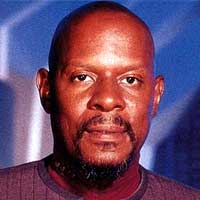
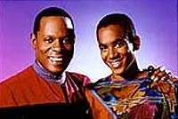
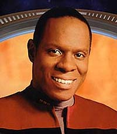
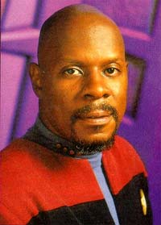
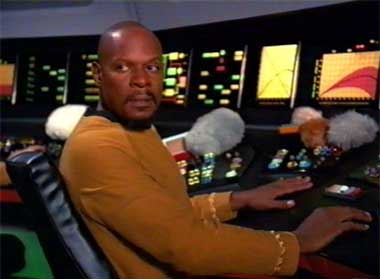
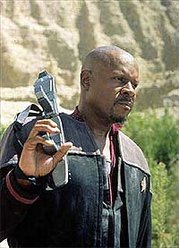

|
Benjamin Lafayette
Sisko
 Espcie:
Humano (de descendncia afro-americana) e Profeta
Nascimento: 2332, em Nova Orleans, Terra
Formao: Oficial da Frota Estelar com nfase em Engenharia e projeto de naves
Posio: Oficial comandante de Deep Space Nine
Patente: Comandante e capito
Paradeiro oficial: Dado como perdido em ao
Paradeiro no-oficial: Tornou-se uma forma de vida no-linear e no corprea que agora habita a fenda espacial de Bajor ao lado de outros seres similares (habita o "Templo Celestial" ao lado dos "Profetas", segundo os Bajorianos). Apareceu por ltimo em uma viso para a sua segunda esposa Kasidy Yates dizendo que um dia iria retornar.
Laos
familiares e afetivos
Pais: Joseph Sisko (pai) e Sarah Sisko (falecida me). Sisko teve uma madrasta (a falecida segunda esposa do seu pai) que ele sempre acreditou ser sua me biolgica, at bem tarde em sua vida. Junto com tal descoberta, Sisko veio a conhecer a real natureza de sua existncia. Um Profeta tomou o corpo de Sarah e a concepo de Sisko se deu durante tal possesso. Dois dias aps o primeiro aniversrio de Ben (em 2333), Sarah simplesmente se afastou de Joseph sem explicao alguma. Joseph nunca contou a verdade ao seu filho mais velho at 2375.
Irmos: Judith (meia-irm mais jovem) e pelo menos dois meio-irmos mais jovens.
Esposas: Jennifer Sisko (falecida e me de Jake Sisko) e Kasidy Daniele Yates (segunda esposa que permaneceu grvida do seu segundo filho aps o seu desaparecimento)
 Filhos: Jake Sisko e um segundo filho (no nascido e sem nenhuma informao adicional a respeito) com Yates
Maiores amigos: O simbionte Dax (por trs perodos de vida, dos seguintes hospedeiros: Curzon, Jadzia e Ezri) e tambm o capito Laporin (falecido), o capito Quentin Swofford (falecido) e o tenente-comandante Calvin Hudson (falecido).
Outros interesses amorosos: Fenna e paixes adolescentes por Neffie Beumont e Zoey
Phillips.
Curiosidades
Adora cozinhar (uma tradio familiar que herdou do seu pai), especialmente comida "Cajun" (tradicional de onde nasceu). um excelente pianista e cantor. Suas bebidas favoritas so: Raktajino (uma espcie de "caf Klingon") e conhaque Sauriano. Aficionado e praticante de um absolutamente obsoleto e esquecido esporte chamado beisebol. Foi praticante de luta-livre na Academia da Frota Estelar e sempre se interessou pela histria do sculo 21. Tambm joga xadrez Jokariano e pquer (apesar de no ser muito bom neste ltimo). Ele simplesmente odeia "Azna no vapor". Seu cdigo de autorizao "Sisko-1-7-green".
Biografia
Nascido em 2332 em Nova Orleans na Terra.
De 2350 a 2354 esteve na Academia da Frota Estelar. Em seu segundo ano no curso foi capito da equipe de luta livre da Academia e fez estudos de campo na base estelar 137, considerando este um dos melhores perodos de sua vida. Certa vez, aps alguns drinques, ele desafiou um colega de classe Vulcano de nome Solok para uma disputa de luta livre, perdendo humilhantemente. Dando incio a uma rivalidade de anos com tal Vulcano.
Imediatamente aps a graduao (em 2354) e enquanto esperava o seu primeiro posto, o ento alferes Sisko encontrou Jennifer. Eles se apaixonaram e se casaram. Nesta poca, ele tambm conheceu aquele que iria se tornar o seu maior amigo e mentor, Curzon Dax, na estao Pelios. Curzon era um velho diplomata Trill, que Sisko apelidou de "meu velho".
Em 2355 nascia o seu primeiro filho com Jennifer, Jake sisko.
De 2354 a 2366 serviu em diversas naves estelares, incluindo a Livingston. Serviu como oficial executivo da Okinawa sob o comando do ento capito Leyton, durante a guerra da Federao com os Tzenkethi. Foi Leyton quem fez Sisko mudar da diviso de Engenharia para a de comando. E por ltimo (nesta fase da sua vida) foi primeiro oficial da Saratoga, j como tenente comandante.
Em 2366, o almirante Hanson reuniu uma frota federada para impedir o avano de um cubo Borg (rumando para a
Terra), sob o comando de Locutus (a verso assimilada do capito Jean Luc Picard da Enterprise), em Wolf 359. Nesta batalha, a Saratoga foi destruda e Jennifer Sisko foi morta. Sisko mal conseguiu se salvar (juntamente com seu filho Jake Sisko) em um casulo de fuga.
De 2366 a 2369 (ainda devastado pela sua tragdia pessoal), ele comandou os estaleiros de Utopia Planitia em marte. Um dos principais projetos que ele supervisionou nesta poca foi o de um prottipo de nave de guerra para a Federao (posteriormente batizado de Defiant, com o prefixo NX-74205), com o objetivo especfico de combater os Borgs. Para piorar ainda mais as coisas ele perdeu o seu velho amigo Curzon Dax em 2367.
2369:
 Quando ele j considerava deixar a Frota Estelar por um trabalho civil de construir habitaes orbitais na terra, o comando da Frota Estelar decide promove-lo a comandante e dar a ele o comando de uma abandonada estao de minerao Cardassiana em rbita do planeta Bajor. Os Cardassianos haviam recentemente deixado o planeta e a estao, aps dcadas de brutal ocupao, completamente arrasados.
Ainda com a idia de pedir baixa (e tendo recebido as suas ordens pessoalmente de Picard, em uma situao incrivelmente difcil para ambos), Sisko assume seu posto. Entra imediatamente em conflito com a sua primeiro oficial, a major da milcia Bajoriana Kira Nerys, que no aprova de forma alguma a presena da Federao na administrao da estao e na recuperao de Bajor.
O comandante tambm reencontra o seu velho amigo Dax, agora no corpo de uma bela jovem, chamada Jadzia. Sua oficial de cincias. Alm de travar o seu primeiro encontro com o seu antecessor, o antigo comandante de Terok Nor (agora Deep Space Nine), o Cardassiano gul Dukat.
Para surpresa de Kira e Sisko, o comandante convocado para uma audincia pela reclusiva lder religiosa Bajoriana, kai Opaka. Opaka o sada como o "Emissrio", o avatar da religio Bajoriana. Ela diz que ele est destinado a encontrar o "Templo Celestial" e contatar os "Profetas", respectivamente o lar e os prprios Deuses para boa parte dos Bajorianos.
De fato Sisko encontra uma fenda espacial estvel dentro do sistema de Bajor (que o liga at o distante Quadrante Gama) e entra em contato com aliengenas que vivem no seu interior. Entidades para os quais o passado no diferente do futuro. Em seu esforo em tentar se comunicar com eles, Sisko acaba aceitando a sua tragdia pessoal. Como previsto nas antigas Profecias Bajorianas, os "Profetas devolveram a vida ao seu Emissrio". Os "Profetas" permitem que outras naves atravessem a Fenda, transformando imediatamente DS9 (agora movida para a boca da passagem) em um posto de parada obrigatria para misses de explorao e comrcio, rumando para a "terra prometida" do outro lado da galxia. Um posto com grande valor estratgico.
Defendeu Jadzia Dax em uma audincia de extradio em que a jovem Trill se via acusada de um crime supostamente cometido por Curzon Dax.
Teve receio da crescente amizade entre Jake e o Ferengi Nog (sobrinho de Quark e filho de Rom), mas decidiu aceita-la quando observou Jake ensinando Nog a ler. Esteve presente quando do desaparecimento de Kai Opaka em um planeta priso em que os internos se viam condenados a matar uns aos outros continuamente e a serem ressuscitados no dia seguinte pela tecnologia presente na atmosfera do seu cativeiro.
Constri um bizarro relgio enquanto sob o controle de uma matriz teleptica aliengena. Entra em conflito com vedek Winn e seus seguidores e estabelece uma aliana informal com vedek Bareil. Salva a vida de Bareil em um atentado planejado por Winn. Aproxima-se mais de Kira e dos demais Bajorianos.
2370:
Com um iminente golpe de estado em Bajor (promovido por um grupo denominado "O Crculo", liderado pelo ministro Jaro Essa), Sisko convence Li Nalas (uma quase mtica figura para muitos Bajorianos) a ficar e aceitar o seu papel de heri para Bajor. Ben tambm teve um papel importante ao impedir que as foras de Jaro tomassem DS9 enquanto Kira e Dax levavam informao que provava o envolvimento dos Cardassianos nas aes de Jaro, para a cmara dos Ministros em Bajor.
Sisko se interessou pela primeira vez por uma mulher desde a morte de Jennifer, quando se encontrou com Fenna (a bordo da estao), que acabou se revelando uma involuntria projeo mental da esposa do excntrico cientista Gideon Seyetek, de nome Nidell. Mais tarde, quando ele e O'Brien se acidentaram em um planeta governado por uma suposta utopia antitecnolgica, Sisko aceitou voluntariamente tortura, para enfrentar a disfarada tirania da lder local, Alixus.
Sisko descobre que Jake no pretende entrar para a Frota Estelar. Ele entendeu a posio do seu filho e disse apenas que ele deveria encontrar algo que ele amasse fazer e o fizesse da melhor maneira possvel.
Em seguida ao tratado assinado entre a Federao e Cardassia, eis que surge um grupo de colonos Federados, descontentes com o novo desenho das Fronteiras das duas potncias e que consideravam que a Federao os havia abandonado a sua prpria sorte (isto , com os Cardassianos). Este grupo se auto-intitulava de "Os Maquis" e para choque de Sisko, Cal Hudson, o seu velho amigo da Academia era um dos seus lderes. Com a ajuda de Dukat, Sisko conseguiu evitar que o conflito entre os colonos levasse a uma nova guerra entre os seus governos.
Ben foi tambm instrumental para desmascarar o estratagema dos Cardassianos por trs da priso e do julgamento de O'Brien por aquela raa. Em uma viagem de lazer ao Quadrante Gama (com Jake, Quark e Nog), Sisko tem a sua primeira experincia em primeira mo com o Dominion (um nome muito ouvido pela tripulao de DS9 naquele ano de 2070) ao ser capturado por soldados Jem'Hadar, que em seguida assumem a autoria por ataques a naves e colnias Federadas e Bajorianas no Quadrante Gama. Todo o incidente termina com a destruio da nave estelar Odyssey. Sisko decide preparar DS9 para ser a primeira frente de batalha para uma eventual invaso do Dominion.
2371:
Aps uma ida ao quartel general da Frota Estelar na Terra para prestar depoimento sobre o seu encontro com os Jem'Hadars, Sisko retorna a DS9 com o comando da nave estelar Defiant, equipada com um dispositivo de camuflagem cedido pelo governo Romulano. A Frota Estelar tambm designa o tenente comandante Michael Eddington pra tomar conta dos interesses de segurana da Federao a bordo de DS9 (o comando estava cada vez mais descontente em ter Odo como oficial chefe de segurana na estao).
Enviados em uma misso (a bordo da Defiant) ao Quadrante Gama para tentar contatar os Fundadores do Dominion e obter uma soluo diplomtica para o crescente conflito, Sisko e cia. so capturados e submetidos (pelo povo de Odo) a um cenrio de realidade virtual destinado a prever as suas reaes frente perspectiva de uma tentativa por parte do Dominion em estabelecer uma posio no Quadrante Alfa.
Ben descobre que Jake escreve poesia. Em seguida ele ajuda Dukat e os Cardassianos a parar a Defiant, roubada por Tom Riker (um membro dos Maquis) em uma misso no corao do territrio Cardassiano. Depois, um bizarro acidente de transporte coloca Sisko (juntamente com Bashir e Dax) em meio a um perodo negro da histria Americana, na So Francisco de 2024. O comandante tem que assumir o lugar de Gabriel Bell, o mrtir de um famoso conflito civil (ambientado em um verdadeiro campo de concentrao urbano para desabrigados e desempregados) para preservar a linha temporal.
Ben decide fazer uma carta de recomendao para que Nog possa prestar os exames para entrar na Academia da Frota Estelar. Um vedek vem estao para avisar Sisko que uma grande tragdia (prevista em uma antiga profecia) est para acontecer com a chegada de trs Cardassianas em uma misso cientfica. Os eventos que se seguem levam Sisko a passar a acreditar que de fato ele faa parte da mitologia Bajoriana.
Seqestrado pelo Mirror-O'Brien, Sisko levado ao universo do espelho, para se passar pela sua contraparte, agora falecida e convencer a esposa dele (uma importante cientista) a ajudar a causa rebelde. Tal mulher por sua vez a contraparte da sua falecida esposa, Jennifer. Ele tem sucesso na misso e tem encontros amorosos passageiros com as verses alternativas de Jadzia e Kira.
Comanda uma misso suicida de resgate (desobedecendo a ordens diretas) a Odo e Garak com a Defiant. Por ocasio da emboscada dos Jem'Hadars a frota (Cardassiana - Romulana) comandada por Enabran Tain em misso para destruir o planeta natal dos Fundadores.
Em seguida, Sisko constri uma rplica de uma antiga nave solar Bajoriana e prova como verdadeira a lenda da "antiga travessia Bajoriana", conseguindo chegar ao sistema Cardassiano. No bojo de tal aventura, descobre que o sonho de Jake em se tornar escritor pode se tornar uma slida realidade e concorda em se encontrar com uma amiga do seu filho, a capit de cargueiro Kasidy Yates. Sisko assim o faz e os dois estabelecem uma conexo inicial atravs do beisebol. Tornando-se um casal desde ento.
Ben Sisko promovido a capito. Ele imediatamente enviado em uma misso para avaliar um possvel golpe de estado em um antigo inimigo da Federao. Tal misso se mostra potencialmente desastrosa quando um Fundador (se passando inicialmente por um embaixador da Federao) toma o controle da Defiant, camuflada e armada para um ataque que pode precipitar uma nova guerra com os Tzenkethis (toda a misso de Sisko fora forjada pelo Dominion com este propsito).
2372:
 Paranicos com uma possvel tomada de poder em Cardassia por um governo formado por Fundadores disfarados, os Klingons invadem a ptria de Dukat. Ben consegue resgatar o corpo governante Cardassiano e comprova que no havia Fundadores entre eles. Ainda assim as foras Klingons atacam DS9 que consegue resistir ao ataque. Os acordos de Kithomer (entre a Federao e o Imprio Klingon) so revogados nesta ocasio.
Sisko foi diretamente responsvel pela vinda de Worf a DS9 para lidar com crise imediata com os Klingons e pela posterior permanncia do tenente comandante como Oficial de Operaes Estratgicas na estao.
O capito posteriormente preso em um fragmento de subespao, devido a um bizarro acidente na Engenharia da Defiant, enquanto estudando um raro fenmeno na fenda espacial. Ento ele observa breves momentos da vida de seu filho (fazendo "visitas" a ele), que se torna obcecado em traz-lo de volta. Quando seu filho (agora um idoso) comete suicdio, Sisko consegue retornar ao momento do acidente e evita-lo. Extremamente tocado por tudo que presenciou.
Chamado de volta a Terra, devido a crescente parania com os Fundadores do Dominion, Sisko se torna chefe interino da segurana da Frota Estelar, para melhorar a segurana do planeta frente a possveis infiltraes do povo de Odo. Em seguida a um misterioso black-out global, uma invaso parece iminente. Para surpresa de Sisko, seu antigo oficial comandante, o agora almirante Leyton, bolou todo um mirabolante plano para fortalecer a segurana da Terra com mo de ferro e se preparar para uma real invaso do Dominion, e dar um formal golpe de estado no processo. Sisko consegue impedi-lo.
Sisko renuncia ao seu ttulo de "Emissrio" (papel que ele vinha representando de forma desconfortvel) em favor de Akorem Laan, um poeta do passado Bajoriano que emerge da fenda espacial a bordo de uma nave solar (sendo ento cronologicamente o primeiro a encontrar os Profetas). Mas com a tentativa de Akorem de reviver um arcaico sistema de castas em Bajor, Sisko finalmente se d conta da importncia que o ttulo de "Emissrio" tem para os Bajorianos. De volta a Fenda Espacial, os prprios Profetas confirmam a identidade do seu real Emissrio e Akorem retornado para o seu tempo. Sisko assume integralmente o seu papel de Emissrio deste dia em diante.
Sisko foi mais uma vez enganado pelos rebeldes e levado para o universo do espelho. L ele ajuda Similey e cia. a terminarem a construo da sua prpria verso da Defiant e a repelir um ataque da frota do regente Klingon (Mirror-Worf). Mas infelizmente a Mirror-Jennifer morta pela Intendente (em fuga) e juntos, pai e filho, vm novamente "Jennifer" morrer. Em seguida ele salvou Jake de Onaya, uma aliengena que oferecia inspirao a jovens artistas em troca de sua energia vital.
Michael Eddington se revela um traidor Maquis, no curso de uma sensvel misso de ajuda humanitria ao Imprio Cardassiano. Para completa tristeza de Sisko, a capit Yates tambm se mostra uma colaboradora Maquis e ele se v forado a prende-la.
Enquanto imerso do "grande elo", Odo capta a informao que Gowron, lder do Imprio Klingon, fora substitudo por um Fundador.
2373:
Worf, juntamente com Sisko, Odo e O'Brien (disfarados de Klingons) realizam uma misso suicida ao corao do Imprio Klingon em Ty'Gokor com o objetivo de expor o Fundador se passando por Gowron. A misso acaba tendo sucesso, levando a um cessar fogo com os Klingons, mas o general Martok que se revelou o impostor.
Em seguida, tomou posse de uma nave Jem'Hadar acidentada, que se mostrou de grande valia no futuro do conflito com o Dominion. A impossibilidade do capito de confiar na Vorta Kilana levou a morte de um Fundador moribundo na citada nave e na perda de toda uma guarnio Jem'Hadar que se suicidou por ter permitido a morte de um dos seus deuses. Sisko tambm perdeu vrios homens durante este conflito.
Sisko e cia. retornam no tempo (na Defiant) at a poca do infame "incidente com os pingos" a bordo da estao K7. Eles conseguem evitar que Arne Darvin consiga se vingar de Kirk, por t-lo humilhado naquela ocasio do passado.

Pouco depois Jake vai morar com Nog (agora fazendo o seu segundo ano de estgios como parte do seu curso na Academia da Frota Estelar em DS9).
Concorrentemente volta de Kasidy Yates a estao aps seus seis meses na priso... Sisko comea a ter vises que permitem que ele encontre a sagrada cidade Bajoriana de B'Hala, "somente algum tocado pelos Profetas poderia t-la encontrado" segundo as escrituras, feito que at Kai Winn no pode ignorar. Em um estado de grande iluminao, ele prev (de forma enigmtica) que Cardassia e o Dominion vo se unir e que Bajor no deve assinar o tratado de entrada na Federao no momento, o que impressiona demais o governo Bajoriano e impede a assinatura do tratado. As vises cessam aps Sisko passar por uma cirurgia no crebro autorizada por seu filho Jake. A partir daqui a sua relao com Bajor e os Profetas passa a ser um aspecto fundamental em sua vida.
Em seguida, Sisko perseguiu obsessivamente o traidor Maquis Michael Eddington e finalmente conseguiu captura-lo, quando "bancou o vilo" e comeou a usar armas biolgicas em colnias Maquis. O "heri" Eddington teve que se entregar. Quando os Klingons recuaram do territrio Cardassiano, assaltados violentamente pelos Jem'Hadar em seguida a aliana de Cardassia com o Dominion. Gowron parou em DS9 para reparos. Sisko aproveitou o momento e convenceu o Chanceler a restabelecer os acordos de Kithomer.
Sisko tira Eddington da priso para que ele posa ajuda-lo a impedir um ataque de msseis camuflados ao corao de Cardassia (informao proveniente de uma transmisso Maquis interceptada). Tal ataque se mostrou mais um truque dos Maquis, para salvar alguns refugiados escondidos nas Badlands (os Maquis foram massacrados pelos Jem'Hadar quando Cardassia se uniu ao Dominion). Eddington fica para trs e morre, enquanto a sua esposa, Sisko e os demais Maquis conseguem fugir daquele ltimo abrigo.
Sisko inicia um projeto de estabelecer um campo minado na abertura da Fenda Espacial para impedir que mais naves Jem'Hadar rumem para Cardassia. Uma tensa conversa entre Sisko e o embaixador Vorta Weyoum antecipa que um ataque do Dominion estao est prximo. Sisko recomenda que Bajor assine um pacto de no agresso com o Dominion para se proteger do iminente conflito.
Dukat e cia. atacam DS9 iniciando a guerra com o Dominion. Sisko e cia. resistem o tempo suficiente para terminar a ativao do campo minado e evacuar todo o pessoal da Frota Estelar da estao. Ele diz a todos que no descansar enquanto no retornar a este lugar "ao qual pertence".
Ele deixou a sua bola de beisebol para trs, garantia a Dukat de que ele iria retornar. Jake tambm ficou para trs como correspondente de notcias da Frota Estelar. A Defiant e a Rotarram (nave da Martok) se unem a fora tarefa Klingon - Federada.
2374:
Estacionado na base estelar 375, juntamente com os seus comandados da Frota Estelar e Garak ele tomou a nave Jem'Hadar salva por ele prprio um ano antes, em uma misso suicida no corao do territrio Cardassiano para destruir um depsito de Ketracel-White. Acidentados em um planeta juntamente com um contingente de Jem'Hadars, ele se viu obrigado a massacrar todos os soldados inimigos. Quando estes foram trados pelo seu prprio Vorta e o seu lder se mostrou incapaz de desafiar a sua lealdade aos seus Deuses (os Fundadores).
Promovido a adjunto do almirante Ross, Sisko viu Jadzia Dax comandar a Defiant em misses de campo sem ele. Sisko decide que quer construir em breve uma casa em Bajor, planeta que agora ele chama de lar.
Ao saber da iminente demolio do campo minado cercando a entrada da Fenda espacial, ele comandou uma enorme frota aliada com o objetivo de retomar DS9. Infelizmente a Defiant conseguiu furar o bloqueio montado por Dukat tarde demais, o campo minado j havia cado. Decidido a retardar de qualquer maneira os reforos inimigos vindos do Quadrante Gama, Sisko entra na Fenda Espacial mesmo assim.
Sisko tem uma viso dos Profetas, que no querem deixar que ele cometa suicdio. O capito acaba por convence-los a ajudar Bajor. Eles decidem ajudar, mas avisam Sisko que ele ter que pagar uma "pena" por causa disto e que ele nunca encontrar paz em Bajor, apesar de "ser de Bajor". Os Profetas fazem desaparecer a Frota do Dominion e fecham a Fenda espacial (que s reabriria com o final da guerra). A Defiant emerge sozinha da Fenda espacial, para desespero de Dukat. Com a segunda perda deste comando e com a morte de sua filha Zyial, ele tem um colapso mental. Ele devolve a bola de beisebol a Sisko, que retoma finalmente o comando de DS9.
Mais tarde, Sisko e um enlouquecido Dukat (rumando para o julgamento do Cardassiano) caem em um planeta onde Sisko vislumbra a real face do Cardassiano. Dukat consegue escapar jurando vingana contra o povo que um dia oprimiu. Sisko jura, custe o que custar, no deixar Dukat ferir Bajor novamente.
Em seguida, quando a fora de vontade de Sisko comea a falhar frente devastao trazida pela guerra, os Profetas lhe enviam uma viso em que ele um escritor negro dos anos 50 de nome Benny Russell que escreve, pasmem, Deep Space Nine. A trgica luta de Benny para ter a sua histria publicada d a Sisko um novo alento pra ficar e lutar, e como ele prprio disse: "terminar o trabalho que comecei".
Com a idia fixa de trazer os Romulanos para a guerra contra o Dominion ao lado dos Federados e dos Klingons, Sisko d partida a uma sucesso de perturbadores eventos (juntamente com Garak) que acabam levando a este objetivo. Mas de uma forma que vai sempre torturar sua conscincia e que lhe custa o seu respeito prprio.
Guiado por uma viso e por misteriosos rompantes, Sisko traz a bordo de DS9 um antigo artefato Bajoriano, que ele prprio destri posteriormente, libertando um Profeta e um Pagh-Wraith, que tomam os corpos de Kira e Jake respectivamente. No Promenade, uma batalha titnica entre os dois seres (que fatalmente levaria a destruio da estao) interrompida por uma interveno inesperada de Kai Winn. O confronto definitivo entre os Profetas e os Pagh-Wraiths havia sido adiado.
Sisko recebe a medalha de honra Cristopher Pike das mos do almirante Ross. Ele nomeado para liderar o ataque aliado (Federao - Imprio Klingon - Imprio Romulano) em Chin'toka (uma importante posio em territrio Cardassiano). O capito tambm recebe uma viso dos Profetas que ele no deve deixar DS9, pois algo terrvel ir acontecer. Ele ignora o aviso (devido presso de Ross) e parte na misso. Dukat liberta um Pagh-Wraith que toma o seu corpo. Ele vai a bordo de Deep Space Nine, fere Jadzia mortalmente e liberta o Pagh-Wraith no Orb da contemplao em exposio no templo da estao. Imediatamente a Fenda espacial se fecha e todos os Orbs se apagam.
Os Profetas se comunicam com Sisko distncia, que percebe a tragdia que acaba de ocorrer na parte culminante de sua misso (que acaba tendo sucesso). De volta a estao, com a perda de Jadzia e o desaparecimento dos Profetas, Sisko est devastado. Ele tira uma licena e volta
Terra com seu filho, levando a sua bola de beisebol com ele, um sinal de que ele no sabia se iria voltar ou no a DS9.
2375:
Aps trs meses na Terra, na casa do seu pai, Sisko finalmente tem uma viso dos Profetas, a de desenterrar uma face de mulher das areias do planeta Tyree. Ele descobre que aquela face a de sua verdadeira me, Sarah, e que ela deixou na casa de seu pai um medalho com escritos em Bajoriano arcaico, dizendo algo sobre um certo "Orb do Emissrio". Sisko decide encontrar o tal "Orb" em Tyree, apesar de um atentado a sua vida por um membro do culto dos Pagh-Wraiths. Juntaram-se a ele nesta viagem: seu pai, seu filho e Ezri Dax (a nova hospedeira do simbionte Dax, que sobreviveu ao ataque de Dukat).
Ele encontrou o tal "Orb" enterrado no citado planeta. Ele finalmente o abre, apesar de receber uma viso de Benny Russell internado em um sanatrio, enviada pelos Pagh-Wraiths para tentar engana-lo e impedi-lo. A "Profeta Sarah" que o Orb encerrava restaura a Fenda Espacial e expulsa o Pagh-Wraith libertado anteriormente por Dukat. Sisko finalmente recebe uma viso desta Profeta que confirma que ela tomou posse do corpo da verdadeira Sarah para assegurar o seu nascimento. Sisko e cia. retornam a DS9.
Sisko em seguida reencontrou o seu antigo desafeto, o capito Vulcano Solok. Quando a nave T'Kumbra chegou em DS9 para reparos, seu "amigo" imediatamente desafiou Sisko e a sua tripulao para um jogo de beisebol na holosuite. Durante o jogo, a obsesso inicial de Sisko em vencer se dissipou e o nico ponto dos "Niners" marcado por Rom (em uma derrota completa) foi comemorado como a vitria da final da "Liga Mundial". Solok e a sua tripulao ficaram perplexos com a atitude ilgica dos "Niners", mas o fato de Sisko realmente deixar para trs a rusga dos dois, deixa o Vulcano claramente incomodado. Sisko recebe uma bola de beisebol autografada por toda a sua tripulao.
 Enquanto comandando a Defiant em uma misso de suprimentos para AR-558, Sisko e o seu grupo de descida ficam para trs quando os Jem'Hadar atacam a Defiant em rbita sob o comando de Worf. Sisko comanda a resistncia em terra para proteger uma importante instalao de comunicao do Dominion tomada pelos aliados. Eles conseguem manter a posio, apesar do grande custo em vidas e da perda da perna de Nog.
Aps comprar a terra em Bajor onde ele pretende construir uma casa aps a guerra com o Dominion terminar, ele pede Kasidy em casamento, que aceita. Entretanto, em uma viso, a Profeta Sarah lhe avisa que ele e Kasidy no podero seguir o mesmo caminho e que o seu maior desafio est para comear. Ele fala sobre a viso a Kasidy e o casamento fica suspenso at que ele finalmente decide seguir em frente, haja o que houver. A cerimnia (somente para os mais prximos do capito) celebrada pelo almirante Ross (na sala de conferncias) e ao seu final a Profeta Sarah aparece mais uma vez para Sisko e pede que ele tenha muito cuidado. Seu tom nunca foi ameaador, parecendo muito mais o de uma me se referindo ao um filho.
No muito depois, Sisko estava comandando a Defiant (que destruda) na batalha de Chin'toka, onde a Frota aliada sofre uma derrota humilhante frente arma de dissipao energtica dos Breen (agora aliados dos Cardassianos e do Dominion). Em seguida envia Kira (com uma promoo de campo para comandante da Frota Estelar), Odo e Garak para ajudar a revoluo de Damar em Cardassia (o que eles fazem de forma excepcional). Ordena a Worf que "resolva" as atitudes errticas de Gowron que podem levar a perda de todo o Quadrante, Worf assim o faz desafiando o chanceler a um combate at a morte e colocando o general Martok no poder, como novo chanceler.
Sisko apia o plano de Bashir de usar uma sonda mental em Sloan (da Seo 31), para conseguir encontrar uma cura para a doena dos Fundadores e salvar Odo e em ltima instncia bilhes de vidas. Mais tarde recebe o comando da Sao Paulo (outro nave da classe Defiant) que ele pode rebatizar para Defiant. E na iminncia do ataque final dos aliados contra o Dominion, ele descobre que Kasidy est esperando o seu segundo filho.
Em seguida, Sisko comanda a nova Defiant na investida final contra o Dominion no corao do territrio Cardassiano. Durante a misso, ele tem uma breve viso da Profeta Sarah que avisa que a sua tarefa est prxima do fim. Aps a vitria final dos aliados, Sisko est comemorando na boate hologrfica de Vic Fontaine com sua famlia e amigos quando sente a iminente liberao dos Pagh-Wraiths das cavernas de fogo. Ele ruma rapidamente para Bajor com um explorador. Ele enfrenta Dukat e os dois acabam sendo consumidos pelas chamas (juntamente com o livro do Kosst Amojan). Dukat fica aprisionado com os Wraiths nas cavernas de fogo. Sisko acorda no Templo Celestial e a Profeta Sarah avisa que ele se juntou aos Profetas. Ele aparece pela ltima vez em uma viso para Kasidy para se despedir e dizer que um dia vai voltar.
|